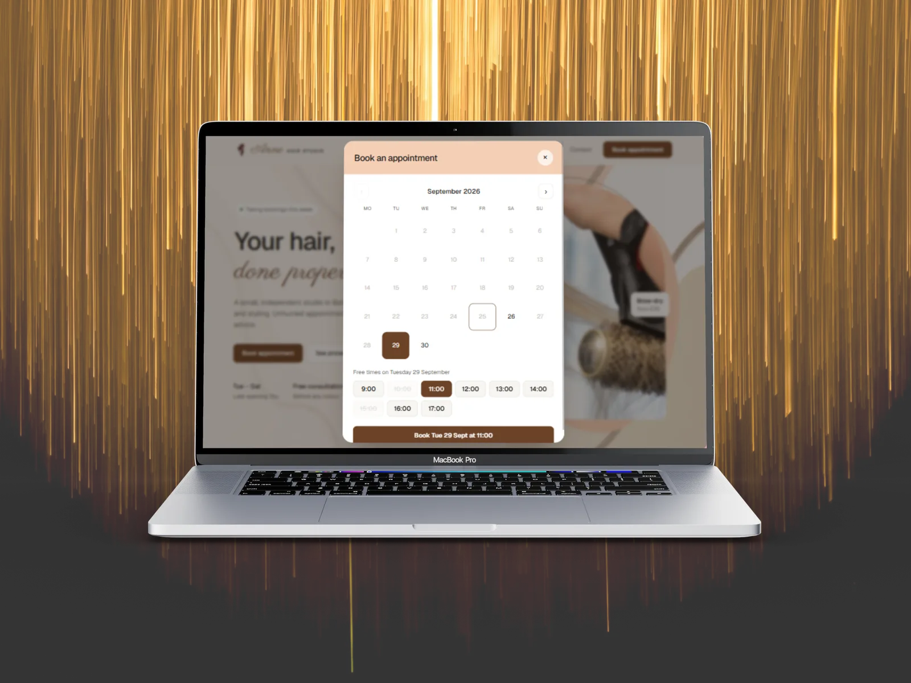
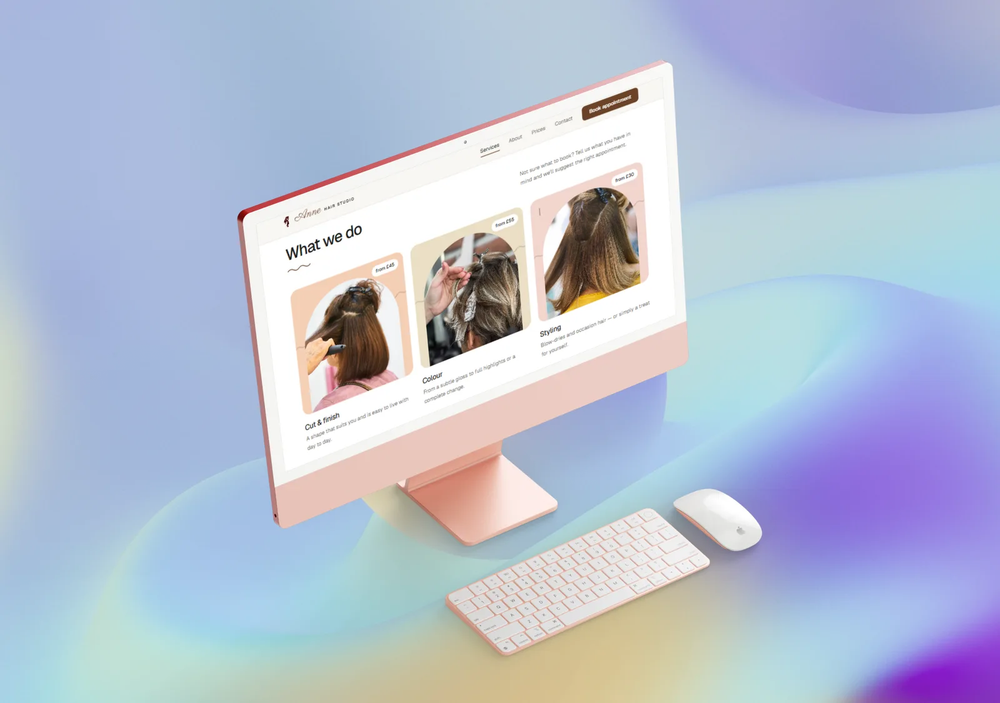
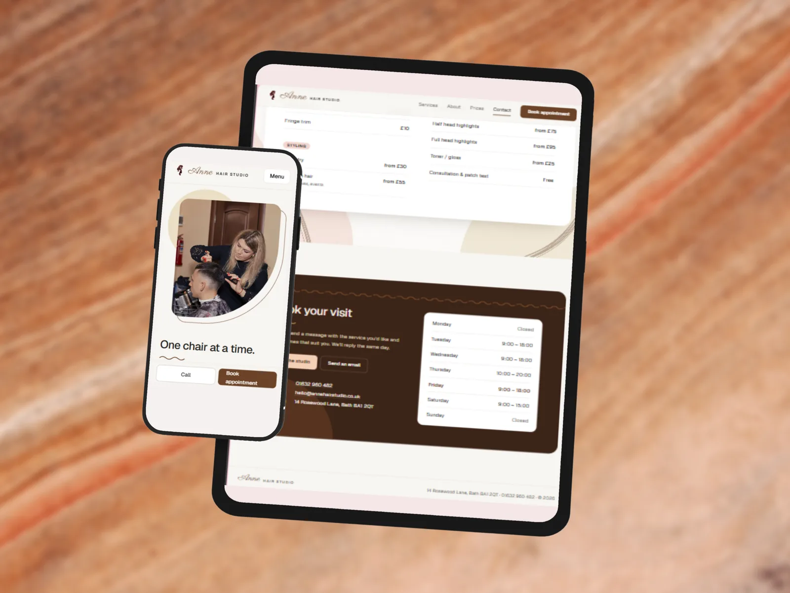

Website with a booking calendar
Anne Hair Studio
A website for a one-person hair salon, where clients can see the prices and opening hours and pick a free appointment.
- My roleDesign and development
- TypeSmall business website
- StackHTML, CSS, JavaScript, Firebase Hosting




The problem
A stylist who works alone has no time to answer the same questions all day: what do you offer, what does it cost, when are you open, and how do I book? If the answers are hard to find, clients go to a salon that makes it easy.
What I built
A calm, warm website that answers those questions on the first visit:
- A "Book appointment" button that opens a booking calendar. The client picks a day, then a free time, then enters their details.
- A full price list and a weekly opening hours table, with today's day highlighted.
- On phones, the call and booking buttons stay at the bottom of the screen while the client scrolls.
Technical details
- The booking calendar is written in plain JavaScript, with no library. It draws each month, disables past days and days with no free time, and lists the free hours for the chosen day.
- The opening hours are stored once, in a single object. The calendar, the time slots, the opening hours table and the "Open today" text in the header all read from it.
- The booking form checks the name, email and phone number as the client types and moves focus to the first field with an error.
- The booking window is a native
<dialog>. In old browsers that do not support it, the button simply links to the contact section instead. - Hosted on Firebase Hosting.
Code sample
The opening hours drive the whole calendar. A day can be booked only if the salon is open and at least one hour is still free:
// day of the week → opening hours
const OPEN = {2:[9,18], 3:[9,18], 4:[10,20], 5:[9,18], 6:[9,15]};
const slotFree = (d, h) =>
!(+d === +todayStart && h <= now.getHours()) && !isTaken(d, h);
const hasFree = d => {
const o = OPEN[d.getDay()];
if (!o) return false;
for (let h = o[0]; h < o[1]; h++) if (slotFree(d, h)) return true;
return false;
};Challenges and fixes
Weeks starting on Monday. JavaScript's getDay() counts Sunday as day 0, but UK calendars start on Monday. I shift the first day of each month with (getDay() + 6) % 7 so the dates line up under the right weekday.
No times in the past. On today's date, hours that have already gone are disabled, and you cannot go back to a month before the current one.
What I would do next
This version is a front-end demo: the booked times are simulated, so the calendar looks realistic, and nothing is saved yet. Next I would:
- Save bookings to a database (for example Firestore) and read the real free times from it.
- Stop two clients booking the same time by checking the slot again on the server when the booking is saved.
- Send a real confirmation email and give the owner a simple page to see and cancel bookings.